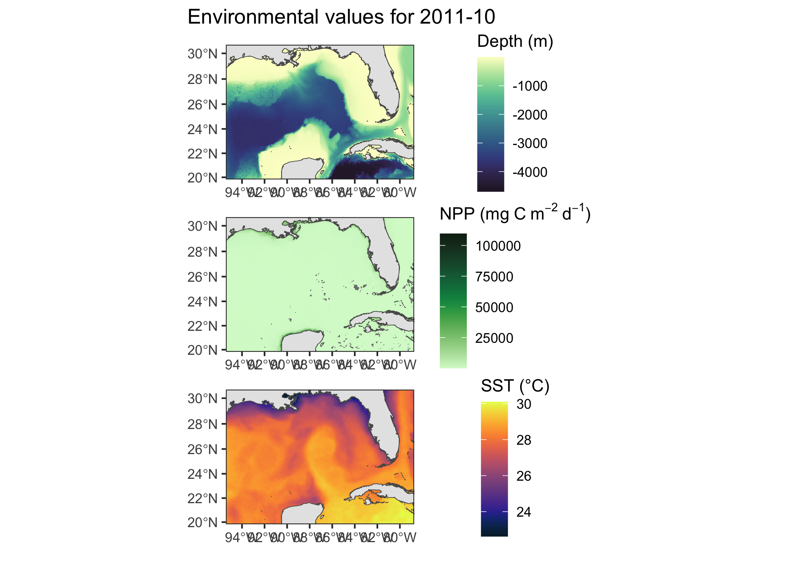

Comparison of model transferability by method
1 Background
The first objective of my NSF project is to compare among four different modeling methods trained on Gulf of Mexico green turtle data and determine which produces the most accurate predictions of habitat selection on independent data sets from Brazil and Qatar. Each model was fit using a resource selection function, typically expressed as \(w(x) = exp(\beta_0 + \beta_1x_1 + \beta_2x_2 + \dots)\). The modeling methods that were compared include a generalized linear model (GLM), generalized additive model (GAM), boosted regression tree (BRT), and Gaussian Process regression (GPR). To account for individual functional responses to each of the selected model covariates (i.e., bathymetric depth, net primary productivity, sea surface temperature), each model was fit as a hierarchical model using a random intercept and random slopes per each of the 49 individuals tracked in the GoM, with the exception of the BRT model since there is not currently a way to implement such effects. These models are therefore abbreviated as HGLM, HGAM, and HGPR. To allow the HGLM model to more flexibly fit non-linear relationships, quadratic terms were included for each covariate.
Below, I’ve shown rasters for each of the three covariates (i.e., depth, NPP, SST) in October 2011 for the Gulf of Mexico. Additionally, I’ve shown predicted surfaces of log(intensity) of use per model for the GoM.

2 Methods
I will not be presenting the details of how each method was parameterized or fit in this document, but I will show example predictive surfaces across methods in addition to a comparison of the metrics of predictive accuracy (i.e., transferability). For this project, I evaluated model transferability using the Boyce Index calculated per month-year, which essentially divides the predicted values from each model into 10 bins of equal width and then calculates the Spearman correlation of the predicted/expected ratio of points found within each bin. This index ranges from -1 to +1, where values close to -1 indicate a model predictive of where the animal isn’t, values close to 0 are no different from random, and values close to +1 indicate a perfectly predictive model. Additionally, I calculated another metric that determines the number of bins required to account for \(\geq 90 \%\) of all observations. This second method is included to potentially distinguish between methods with high correlations from the Boyce Index, but few observations in areas of greatest predicted suitability.
3 Results
Example of predictive surfaces
As was shown prior for the predictive surfaces in the Gulf of Mexico (on the training data), here I will show how each of the models predict log(intensity) over space for a single month-year in Brazil and Qatar separately.

Evaluating model transferability
The above predictions shown for the Brazil and Qatar data were performed for every month-year of the respective datasets, where time-matched observations were then used to extract these predicted estimates of log(intensity) per method. For each location, the range of all possible log(intensity) values were broken up into 10 bins of equal width per method (i.e, HGLM, HGAM, HGPR, BRT) and a ratio of predicted:expected observations was calculated per bin. A Spearman correlation was then calculated for the predicted:expected ratio over the binned values of log(intensity) to calculate the Boyce Index, which ranged from -1 to +1.
Inspection of some of these plots for the Boyce Index showed that correlations could be relatively high despite the observed points falling in the middle of the predicted log(intensity) bin range, rather than being the highest at the greatest predicted values. Therefore, this method was supplemented by calculating the average number of bins that accounted for \(\geq 90\%\) of the observations per site (Brazil, Qatar) per method, starting from the upper end of the distribution since this is where the greatest number of observations should be found for a highly predictive model.
Upon exploratory inspection of some of the predicted intensity surfaces from the models, it appeared that the spatial resolution of 4.5 km could not always properly represent the environmental conditions at the small island of Fernando de Noronha for the Brazil dataset. Since 20 individuals spent some or all of their time at this island, each of the model transferability assessments were calculated using all Brazil data (‘Brazil_full’) or only individuals tracked along the mainland (‘Brazil_sub’) to account for potentially biased estimates of transferability.
4 Conclusions
Based on these findings from comparing the model transferability based on the statistical model that was used, it appears that the hierarchical Gaussian Process regression performed best based on both the Boyce Index and the mean number of bins to capture \(\geq90\%\) of the data. This result held up for both study locations (Brazil and Qatar), although differences were small between the HGPR and HGLM models.
For the remaining two objectives of my project, I’ll be using the HGPR model to evaluate the effect of spatial resolution and accounting for life stage preferences on model tranferability.